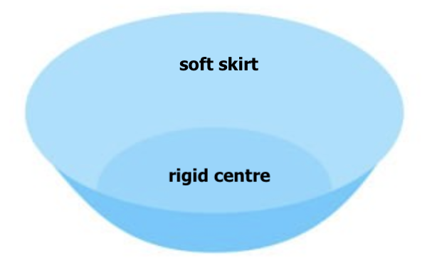
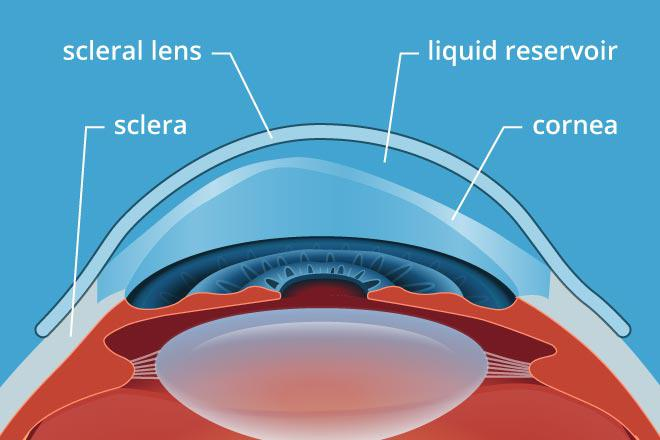

Hybrid Lenses
Hybrid lenses aim for the best of both worlds: they are made of a rigid centre housed in a soft 'skirt'. This way, they can provide the clarity offered by rigid contact lenses whilst still having the relative ease of use and comfort of soft contact lenses.
Hybrid lenses also cover a greater area of the cornea than regular rigid lenses- the rigid centre does not actually contact the cornea. The space in between is filled by preservative-free saline, which is placed into the 'bowl' of the contact lens before insertion. This means that hybrid lenses may also be more effective for people with larger or more severe corneal irregularities, though the main advantage of hybrid lenses over regular rigid lenses is still suggested to be the improved comfort and wearer satisfaction1.
| Advantages | Disadvantages |
|---|---|
|
Able to correct for irregular astigmatism like regular rigid contact lenses Easier handling and better initial comfort like soft contact lenses Good stability on eye Minimally affected by foreign particles |
Expensive Less durable and shorter replacement schedule (~6 months) than other rigid lenses More susceptible to dryness due to the soft skirt |
Scleral Lenses
Scleral contact lenses are large diameter rigid contact lenses that stretch over the entire cornea and rest only on the white part of your eye (the sclera). Similar to hybrid lenses, there is no contact between the scleral lens and the cornea- the space in between is also filled by preservative-free saline. Whilst historically these may have been thought of more as last resort options, they are becoming more and more popular because of their wide use case and many advantages.
Special uses of scleral lenses
- As such a specialised lens, scleral lenses can help in many of the situations that limit the use of other corrections:
- Severely irregular corneal shape: such as what occurs in advanced keratoconus and other conditions involving corneal thinning, like pellucid marginal degeneration2. As these lenses skip over the entire cornea, they can help correct vision for people who cannot benefit from regular rigid lenses.
- Avoiding or delaying corneal graft: scleral lenses can improve vision in advanced stages of disease that would otherwise need surgery, and their use has seemingly been associated with lower rates of corneal grafts3.
- Corneal protection: scleral lenses essentially form a shield over the cornea whilst providing constant lubrication via the saline reservoir, so are also used when the cornea becomes severely damaged from conditions like advanced dry eye, recurrent corneal erosion, neurotrophic keratopathy and Stevens-Johnson Syndrome.
As with any type of contact lens, scleral lenses have their own particular advantages and disadvantages that can play a factor in whether or not these lenses are suitable for you.
| Advantages | Disadvantages |
|---|---|
|
Excellent comfort and stability Minimal dependency on the shape of the cornea to fit properly and provide good vision Better protection from particles or irritants No issues with dry eye |
Generally one of the most expensive contact lens options Initial adaptation can still take some time Large size can make insertion/removal harder for some people |
1. Lim, L., & Lim, E. W. L. (2020). Current perspectives in the management of keratoconus with contact lenses. Eye (London, England), 34(12), 2175–2196.
2. Rathi, V. M., Dumpati, S., Mandathara, P. S., Taneja, M. M., & Sangwan, V. S. (2016). Scleral contact lenses in the management of pellucid marginal degeneration. Contact lens and anterior eye, 39(3), 217-220.
3. Koppen, C., Kreps, E. O., Anthonissen, L., Van Hoey, M., Dhubhghaill, S. N., & Vermeulen, L. (2018). Scleral lenses reduce the need for corneal transplants in severe keratoconus. American journal of ophthalmology, 185, 43-47.